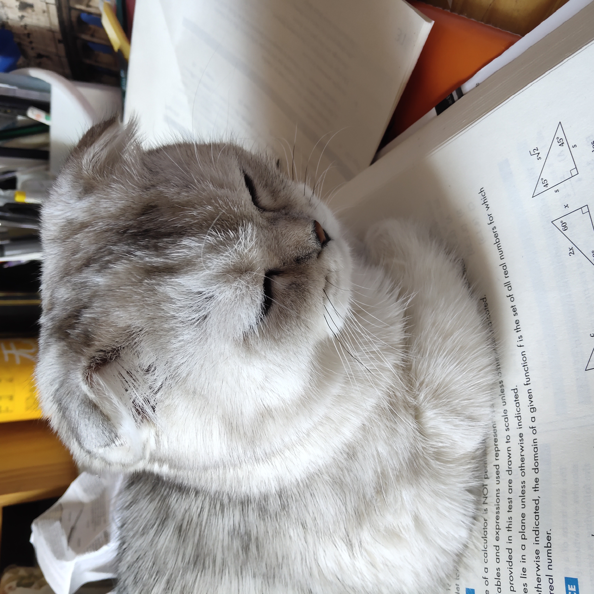
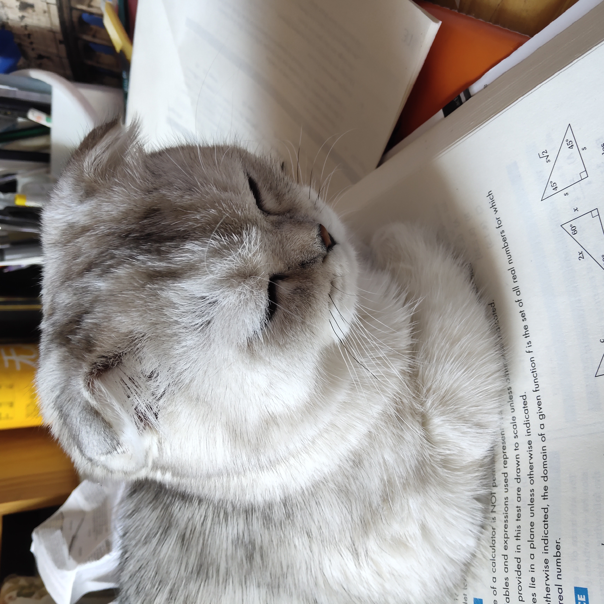

Pets
Honey

Honeys favorite thing in the world is swimming. Even if it is the middle of January and half of the lake is frozen, Honey will be in the water. She is a smart swimmer, so when my brother and I go underwater, she will follow our air bubbles and be waiting for us when we come up for air.
While most dogs like to chase balls or sticks, Honey likes to chase rocks. She will even chase rocks into the water and stick her whole face in the water to try and find the rock thrown. Chasing rocks is her main form of exercise right now as she refuses to go on walks from our house. If we drive her to another spot and walk from there, Honey will go on a walk but she refuses to leave our driveway when we try to walk from home. Finally one other Honey-ism is that her safe place is bathtubs. Many times our family has woken up in the middle of the night and found Honey is a bathtub
Photo Gallery


Likes
- Likes rocks
- Likes food
- Likes attention
Milktea

Milktea is a Scottish fold with a personality of a princess. She loves her veggies and refuses to eat anything dropped on the ground. She makes it clear when she has a demand of any sort by complaining in a loud, distinguished manner. If what she says could be translated, it probably would be, “This is atrocious, the water container has been empty for the 3rd time this week. I want to see the manager.”.
Despite her cuteness and royalty, she actually suffers from a genetic disorder intentionally brought upon by humans. I highly advise against keeping a Scottish fold because they are in constant pain when they reach around 2 years old. Cartilage accumulates around her paw joints and tail joints and it becomes painful for them to even walk. She is living evidence of human’s cruelty of breeding animals to look pretty while sacrificing the animals’ health.
Photo Gallery


 

Likes
- She loves individual corn kernels served on human hands
- She enjoys sitting royally on suitcases to claim ownership of her humans
- She prefers to be alone and sit on soft surfaces in her free time
Bo

Bo is a Portuguese Water Dog with black and white fur. His paws are white too, so they always get dirty when outside. He is 12 years old, but he still likes to run around outside a lot.
He has an abundance of toys but only likes to play with a couple. He enjoys going on walks and especially on trails in the woods. He has a few dog friends that he likes to go on playdates with as well.
Photo Gallery


Likes
- Walks
- The Sun
- Treats
Chunky Doll (Chonks)

Chunky Doll or as he prefers to respond to, Chocks, is a 4-year-old ragdoll. His name was inspired by his breed and looks. As a kitten, he was even chunkier and blended right in with a fluffy white rug we had that he loved playing hide and seek in. He’s a very lazy but playful cat, only playful when he feels like it.
He is a pretty but very difficult cat as he is white but hates showers and loves rolling around in the house collecting dust. To get him into a bath we often have to lure him in with fake human treats. And even then he jumps right out of the bath and runs around the whole bathroom making the floors wet. Nevertheless, he’s a very soft, cuddly, and loving cat.
Photo Gallery


Likes
- Human treats
- Naps
- Cuddles
Maui
Maui is a two-year-old mini-doodle who thinks he is as big as a German shepherd. This mindset allows him to voice his opinion, especially when demanding food or attention. He is also a classic momma's boy, as he has learned if he is annoying enough, he can get anything he demands.
During his lounging time, he gets to the highest chair he can get on and stares outside, waiting either for guests or belly rubs. He also has the tendency to force his mother to go to sleep as soon as his father goes to bed.
Photo Gallery


Likes
- Car rides
- Being chased
- Sitting in high places
Basil

Basil, otherwise known as Slaysil, is a very energetic white, slightly crusty and trusty, dog (bichon) . She gets princess treatment in her household, but also out in public. As a consequence, she is very clingy and loves to lick, especially in the face.
She endeavors in multiple hobbies and activities, which include flying, licking, standing on two legs, ringing bells, and jumping through hula hoops.
Photo Gallery


Likes
- Empty water bottles
- Socks
- Cats
Mocha
Mocha is a 5-year-old quarter Maltese, quarter Yorkshire Terrier, and half mutt. He was not adopted but actually born into the family and lives with his mommy Mochi and a loving family. Mocha likes to fool people into thinking that he's a dummy boy then making an intelligent comeback to surprise everyone of his big brain. He recently got a new toy that squeaks so high that he gets so excited everytime he chews on it.
If Mocha likes something or someone, he likes to rub his neck on it. This includes (but not limited to) rubber toys, favorite snacks, blankets, and human faces. As soon as someone lays down facing up, Mocha will run out from somewhere in the house and launch himself onto your face. It seems to be his favorite activity.
Photo Gallery


Likes
- Rubber toys
- Walks
- Anything edible